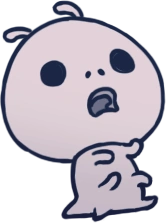

Verme
Os membros mais fracos do reino de Hallownest. Geralmente desprezados e forçados a fazer trabalhos miseráveis.
Notas do caçador
Consiste principalmente de gordura doce, essas criaturas indefesas são excelentes lanches para viagens longas. Melhor assado. Se eles tentarem negociar por suas vidas, ignore-os. Eles não tem nada a te oferecer.
Comportamento e Táticas
Se afasta do Cavaleiro enquanto choraminga, não apresentando perigo. Corre até bater em uma parede, e então, ricocheteia e continua na parede. Eles não renascem.
Diálogo do Ferrão dos Sonhos
...oh não oh não oh não oh não não não...
Acorde, irmão! Me ajude!
Aaaaaaaauugghhhhh!
Verme

Vida: 1 pontos de vida
Recompensa: 2 geo (normal) / 3 geo (ganância frágil)
Localização: Encruzilhada Esquecida;
Requerimento notas do caçador: 2 abates